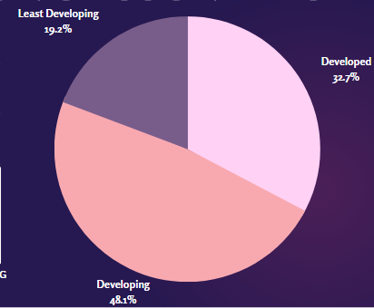
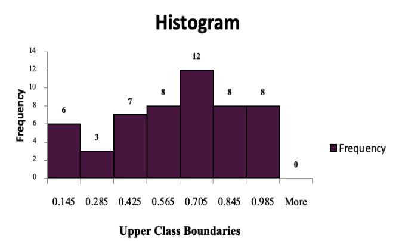

This variable designates a country into developed, developing, or least developed. 32.7% countries are developed, 48.1% are developing, while 19.2% are least developing.

women's civil liberties
This variable is a number from 0-1 to rate women's civil liberties in a country. The histogram shows how skewed(inclined to an extreme) women's civil liberties are.

women's political participation
This variable is a number that represents women's political participation in a country. The histogram shows where the variables are skewed to. We can see that most countries have a higher number of women in politics.
So, with our data, we can conclude that the movement for women's rights has truly made huge progress. Despite the major differences in classifications in a ratio of 19:48:33, women's political participation in different countries is mostly high. However, the results of the histogram for women's civil liberties are so-so, showing a need of progress for this variable.